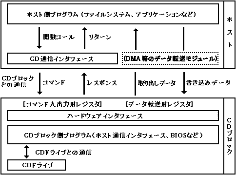

★PROGRAMMER'S GUIDE
★CD通信I/F(CDパート)
★PROGRAMMER'S GUIDE
★CD通信I/F(CDパート)
分類 | |
|---|---|
CDパート | 通信方式、CDドライブ関連、CDバッファ関連 |
MPEGパート | MPEG関連 |
┌────────────────────────────────┐ │ │ │ アプリケーション │ │ │ └────────────────────────────────┘ ┌───────┐ ┌───────────┐ ┌────────┐ │ＭＰＥＧ │ │ストリームシステム │ │ファイルシステム│ │ライブラリ │ │ライブラリ │ │ライブラリ │ │ │ │ ┌───┘ │ │ │ │ │ │ ┌───┘ │ │ │ │ │ │ │ └───────┘ └───────┘ └─────┐ │ ┏━━━━━━━━━━━━━━━━━━━━━━━┓ │ │ ┃ ＣＤ通信インタフェース ┃ │ │ ┗━━━━━━━━━━━┯━━━━━━━━━━━┛ └──┬───┘ ソフトウェア │ │ ━━━━━━━━━━━━━━━━━━━┿━━━━━━━━━━━━━━━━┿━━━━━━━━ ハードウェア │ │ ┌──────┴─────┐ ┌──────┴──────┐ │ ＣＤブロック │ │ＳＩＭＭ，ＳＣＳＩファイル│ └────────────┘ └─────────────┘
図1.2 CD関係のシステム構成

★PROGRAMMER'S GUIDE
★CD通信I/F(CDパート)